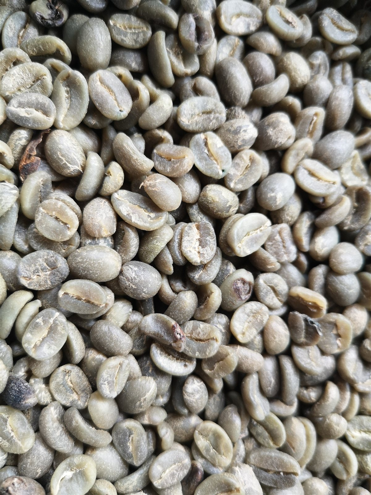
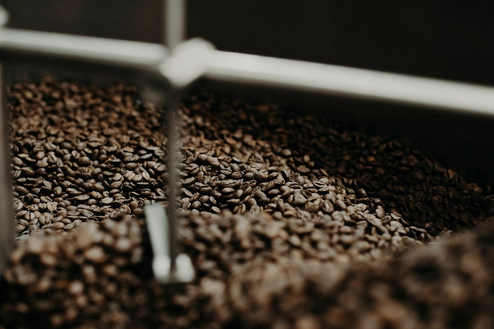

一杯に仕上げるまで
生豆を選び、火を入れ、一杯に仕上げる。若木珈琲店が大切にしている3つの時間です。
-

豆を選ぶ厳選した豆と向き合う
一杯の味わいは、豆選びから始まります。若木珈琲店では、厳選した豆を一つひとつ見極めながら仕入れています。詳しい豆の種類やその時々の入荷については、店頭またはInstagramでご確認ください。
-

火を入れる焙煎という対話
豆の個性を引き出す焙煎の工程にも、静かな時間をかけています。火入れの加減ひとつで表情を変える珈琲豆と、じっくり向き合う。その先にある一杯のために、手間を惜しみません。
-
 一杯に仕上げる
一杯に仕上げるハンドドリップで、お客様ごとに
ご注文をいただいてから、一杯ずつハンドドリップで淹れています。湯を落とす速さ、蒸らしの間合い——同じ豆でも、その日その時の状態に合わせて仕上げる一杯を、ゆっくりお楽しみください。